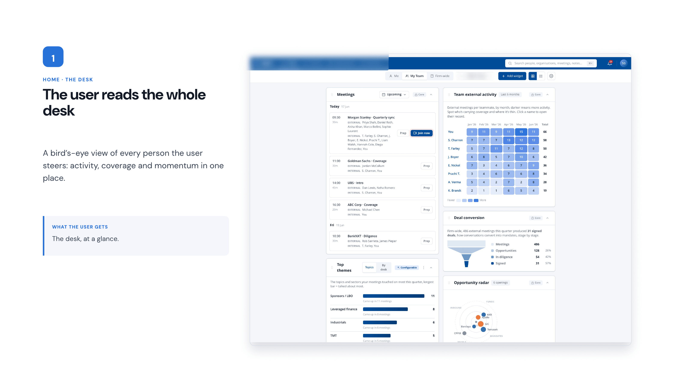
Revamping an internal CRM around how traders actually work, from the morning prep to the meeting follow-up.
Overview
The CRM had grown across teams into a fragmented experience. The redesign focused on bringing the information traders and other stakeholders need around meetings, contacts, organisations and follow-ups into one connected workflow.
Portfolio manager workspace
The full desk view before zooming into Sonia’s journey.
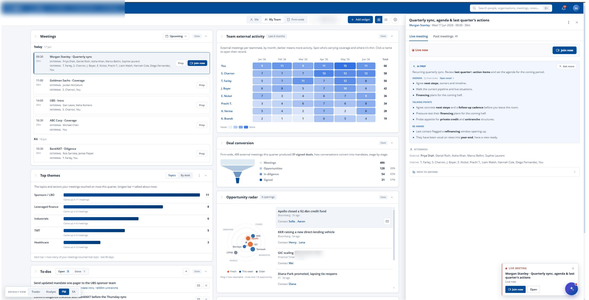
Sonia, the portfolio manager
The user is a portfolio manager. She wants a bird’s-eye read on the whole desk, so she can steer each person toward what’s actually winning.
The full journey
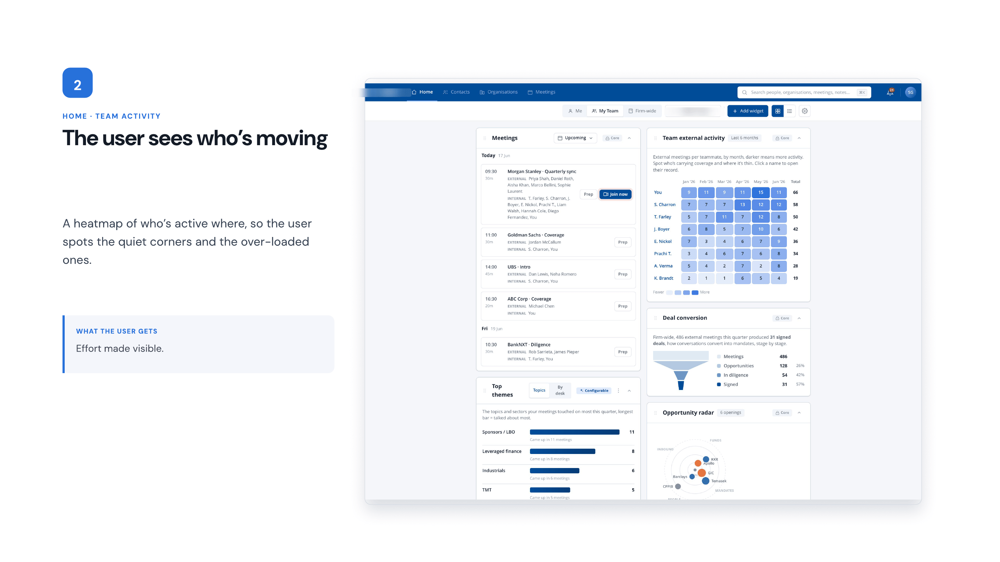
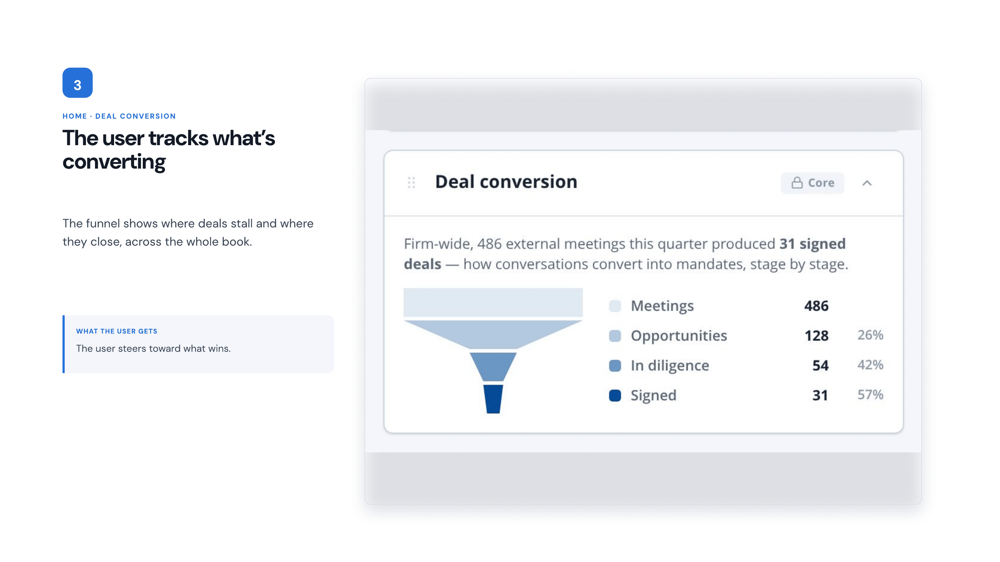
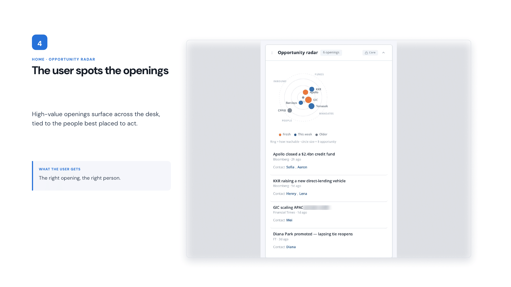
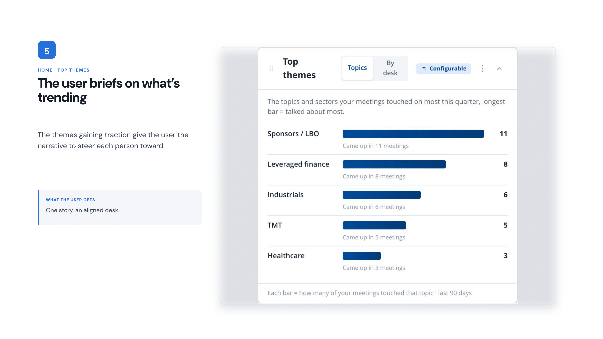
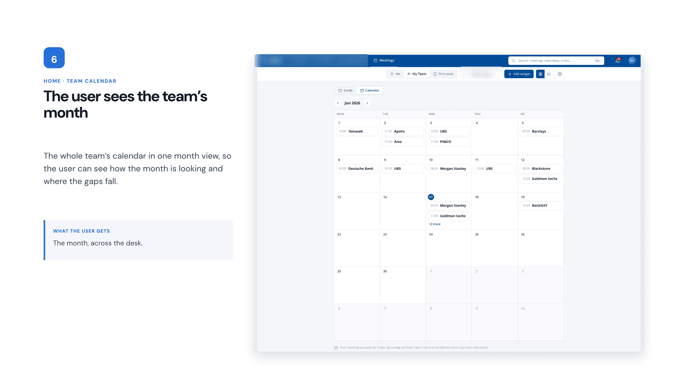
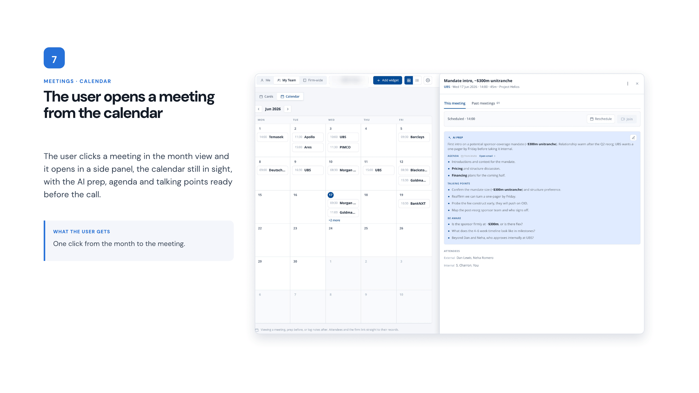
Theo, the trader
The user is a trader. He has just started the day and wants to quickly get up to speed with the tasks and meetings ahead.
The full journey
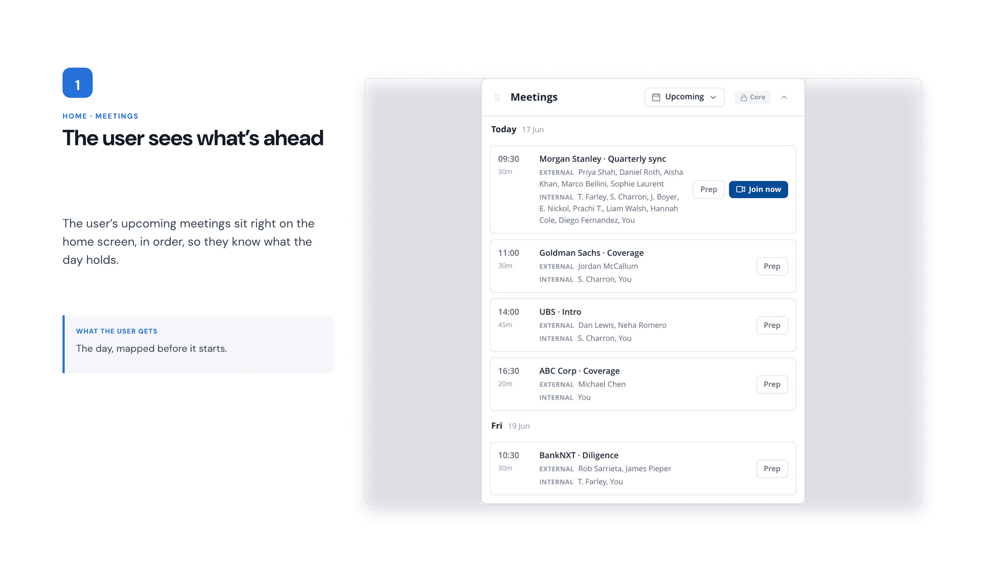
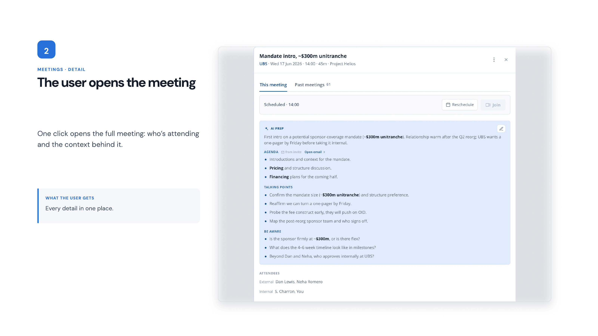
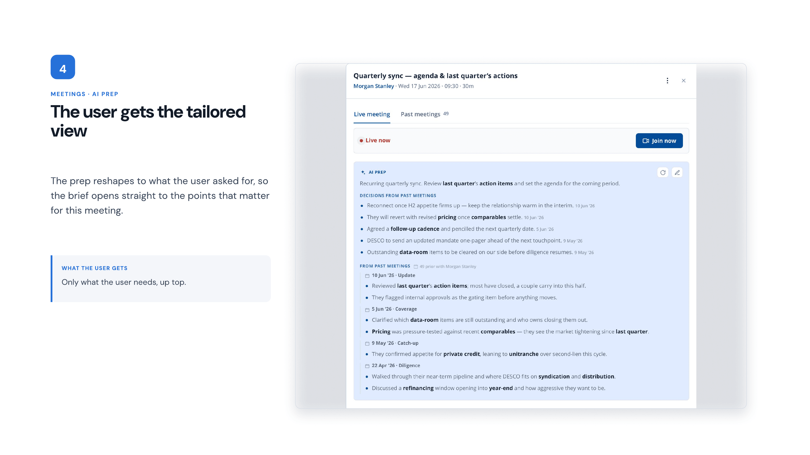
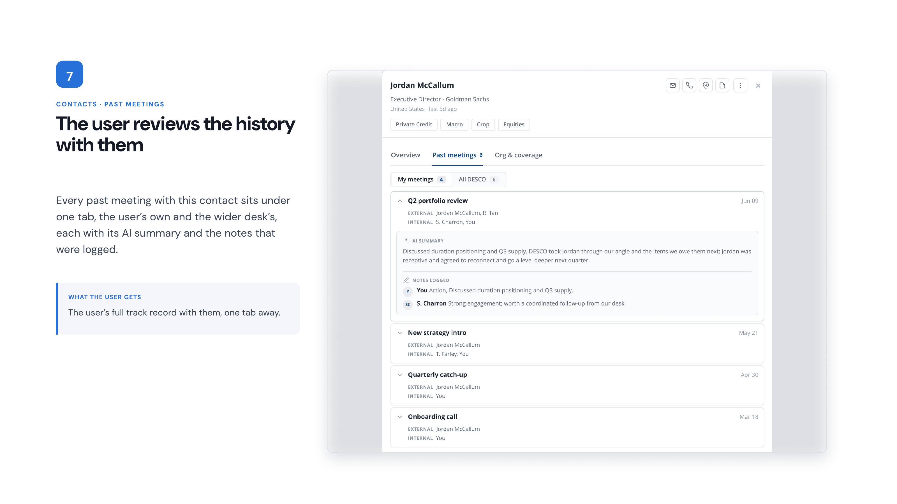
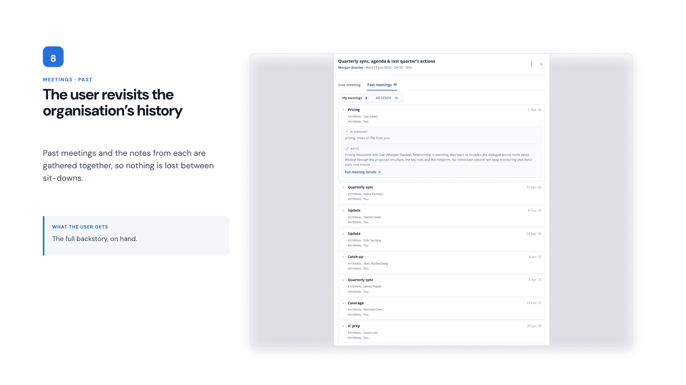
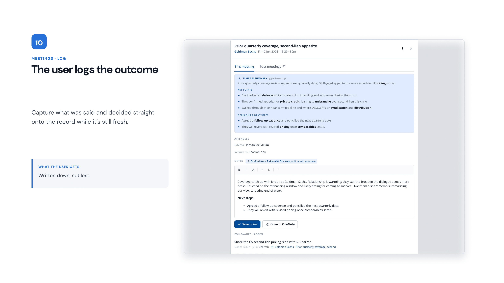
Market Research
The research and synthesis that shaped the future-state CRM direction.
Research & understanding
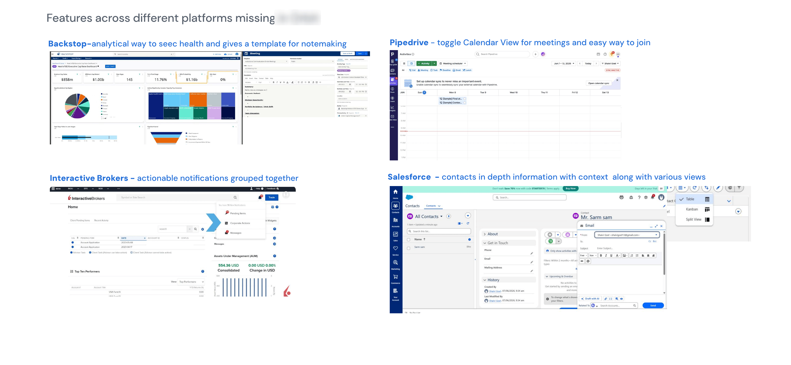
Market research
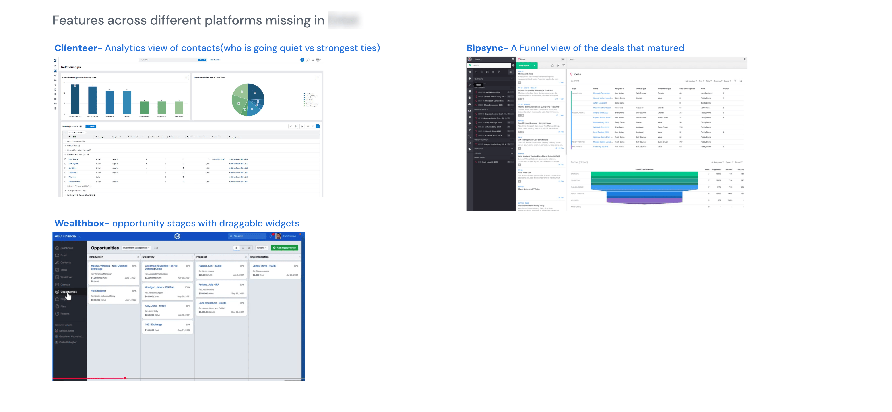
Primary research
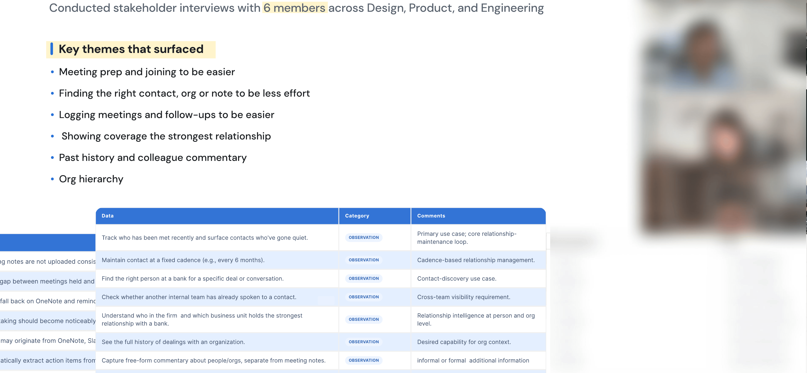
Key findings
User Personas
The personas made the different jobs around the same relationship system explicit before moving into feature and workflow decisions.
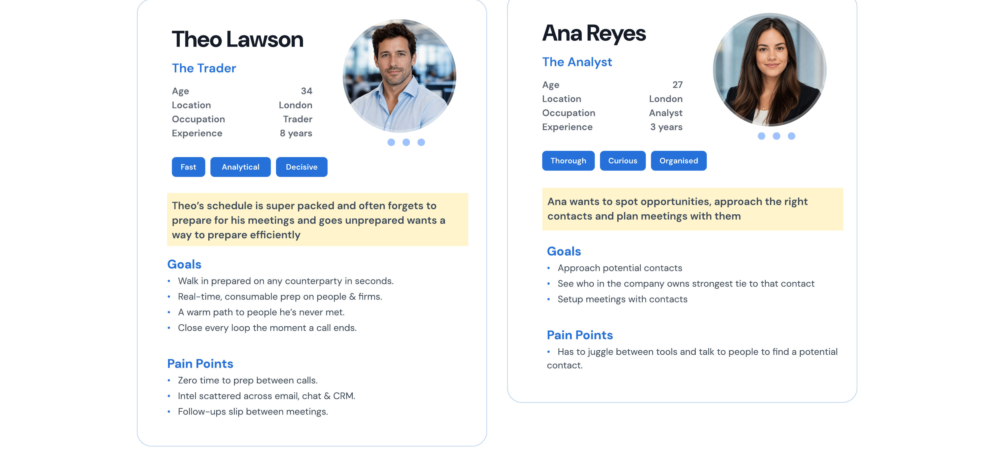
Trader persona
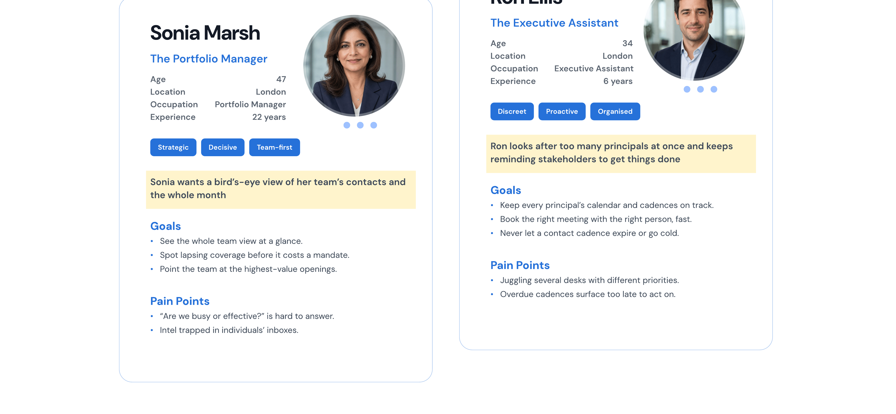
Additional user roles